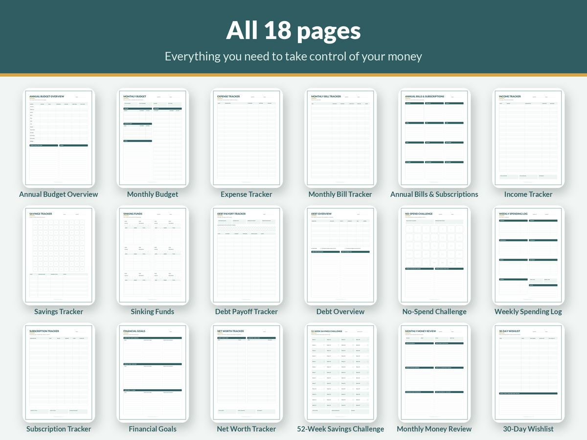

How to Budget on a Low Income: A Practical, Judgement-Free Guide

A lot of budgeting advice is written for people with money to spare. Skip the daily coffee, max out your retirement account, invest the difference. When your income barely covers the essentials, that advice is somewhere between unhelpful and insulting.
Budgeting on a low income is a different job. The goal isn't to optimise a surplus. It's to protect the essentials, avoid the costly traps that make things worse, and build a little breathing room over time. This guide is about doing exactly that, in any country and any currency.
First, be kind to yourself
If money is tight, it isn't a personal failing. Rent, food and energy costs have risen sharply in many countries in recent years, and wages haven't always kept up. Feeling stressed about money is normal, and stress makes decisions harder. A simple plan written down on paper takes some of that weight off your mind.
You don't need to do everything in this guide at once. Pick one or two steps this week.
Step 1: Know exactly what comes in, and when
Write down every source of income for the next month and the date each one arrives: wages, benefits, child support, any side income. On a low income, timing matters as much as the amount. Rent due on the 1st and pay on the 15th can create a crisis even when the monthly totals technically add up.
If you're paid weekly or fortnightly, budget pay day by pay day rather than by calendar month. For each pay, list which bills fall due before the next pay arrives, and assign that pay to them first.
Step 2: Put essentials in priority order
Not all bills are equal. Some missed payments have much more serious consequences than others. Before anything else, list your costs in this order:
- Housing: rent or mortgage. Falling behind can risk your home.
- Energy and water: heating, power, water.
- Food: a realistic, basic grocery budget.
- Things that carry legal or serious consequences if unpaid: in many countries this includes local property taxes or council rates, court fines, child support and some tax debts.
- Getting to work: transport or fuel, so your income keeps coming.
- Phone and internet, which many people now need for work, benefits and job seeking.
- Other debts, such as credit cards and personal loans.
This is the core of budgeting on a low income: if there isn't enough for everything, the top of the list is paid first. Unsecured debts like credit cards matter, but missing one is usually less damaging than losing your home or your heating. If you're in this position, it's a strong sign to get free debt advice (see Step 6).
Step 3: Check you're getting everything you're entitled to
This is often the single biggest change you can make. Many people miss out on support they're eligible for, simply because they don't know about it or assume they won't qualify.
Depending on where you live, that might include:
- income support, tax credits or in-work benefits
- housing or rent assistance
- help with energy bills or social tariffs for utilities
- discounted or free public transport
- free school meals or childcare support
- hardship grants from charities, local government or your energy supplier
Most governments have an official benefits website or calculator, and many independent charities offer free, confidential checks. It's worth an hour of your time, even if you've checked before, because rules and thresholds change.
Step 4: Track where the rest goes, without shame
Once essentials are listed, look at a month of bank and card transactions and group the rest of your spending. You're not looking for "bad" spending to feel guilty about. You're looking for patterns: the subscription you forgot, the bank fee you could avoid, the takeaway nights that cluster around tiring weeks.
On a tight budget, small leaks matter more, not less. A forgotten monthly subscription is a much bigger share of a small income than a large one.
Step 5: Cut the costs that make the biggest difference
Small savings add up, but the biggest wins usually come from a handful of large, recurring costs. Look at these first:
- Phone and internet: cheaper plans, SIM-only deals or social tariffs can make a real difference over a year.
- Energy: check whether you're on the best tariff your supplier offers, and ask about hardship support if you're struggling.
- Insurance: shop around at renewal rather than letting it roll over automatically.
- Subscriptions: cancel or pause anything you haven't used in the last month.
- Groceries: plan meals around what's cheap, write a list, buy store brands, cook in batches and use your freezer. A weekly meal plan reduces both waste and impulse buys.
- Bank fees and overdraft charges: if you're paying regularly, ask your bank about fee-free accounts or arrangements.
Avoid cutting things that cost more later, such as essential medication, insurance that protects your income or home, or the transport that gets you to work.
Step 6: Avoid the expensive traps
When money runs out before the month does, some options look helpful but make things much worse:
- Payday loans and high-cost short-term credit can carry extremely high interest and fees.
- Buy now, pay later makes it easy to commit future income you'll also need.
- Rent-to-own for appliances often costs far more than buying outright.
- Unauthorised overdrafts and late fees add charges on top of the original shortfall.
If you're regularly short, talk to a free, independent debt advice service in your country before borrowing. They can help you prioritise, negotiate with creditors, and sometimes arrange affordable repayment plans. Creditors and utilities often have hardship processes too, but you usually need to contact them and ask.
Step 7: Build a tiny buffer
An emergency fund can feel impossible on a low income, but even a small buffer changes things. The difference between having nothing and having a small amount in reserve is the difference between a broken appliance being a crisis and it being an inconvenience.
Start very small. A coin, a note or a few dollars put aside each pay day into a separate account adds up over a year. Some people round up purchases automatically into savings, or save any unexpected money, such as a tax refund or a gift, straight into the buffer.
Once your buffer covers one small emergency, start a sinking fund for your most stressful yearly bill. Our guide to sinking funds explained shows how.
Step 8: Write it on one page
A low-income budget doesn't need to be complicated. One page with your income, your priority list of bills, your spending limits and your buffer is enough. Our simple budget template for beginners gives you a layout you can copy for free.
Check it weekly. Ten minutes on the same day each week to see what's been spent and what's still due is often enough to stop small problems becoming big ones.
A simple example
Imagine someone paid 900 every fortnight, with rent of 800 due on the 1st of the month.
- Pay 1 (arrives on the 25th): 600 goes aside for rent, the rest covers groceries, transport and the phone bill due that fortnight.
- Pay 2 (arrives on the 8th): 200 tops up the rent fund for next month, the rest covers energy, groceries, transport and a small amount to the buffer.
Splitting rent across two pays means the 1st of the month is no longer a crisis. These figures are only an example; your numbers and dates will be different.
When income still doesn't cover essentials
Sometimes, no amount of budgeting closes the gap. That isn't a budgeting failure. It's a sign that you need more income, more support or a change to a major cost. Options to explore include:
- a full benefits and entitlement check
- free debt advice and formal hardship arrangements with creditors
- talking to your landlord or housing provider early if rent is a problem
- local food banks and community support while you get back on track
- in the longer term, training, extra hours or a change in housing costs
Asking for help early almost always gives you more options than waiting.
Tools that help
You don't need to spend money to budget. A notebook works. If you'd like ready-made pages, our Printable Budget Planner is a low-cost set of 18 printable pages in A4 and US Letter, including a monthly budget, bill tracker with due dates, weekly spending log, subscription tracker, sinking funds and a no-spend challenge. You can print only the pages you need and reuse them every month. It's an instant download on Gumroad. If you have several debts to organise, our guide to debt snowball vs avalanche explains how to choose which to pay first.
The short version
- List income and the date each payment arrives.
- Budget pay day by pay day.
- Pay essentials first, in priority order.
- Check for support you're entitled to.
- Cut the biggest recurring costs first.
- Avoid payday loans and high-cost credit; get free debt advice instead.
- Build a tiny buffer, then a sinking fund.
- Check in weekly.
A low income makes budgeting harder, but it also makes a plan more valuable. Every small step gives you a little more control.
This guide is general information, not financial or debt advice. If you're struggling, contact a free, independent debt or money advice service in your country.
More guides
- A Simple Budget Template for Beginners (and How to Fill It In)
- How to Budget on an Irregular Income (A Step-by-Step Method)
- Zero-Based Budgeting Step by Step: Give Every Dollar a Job
- Sinking Funds Explained: How to Stop Big Bills Wrecking Your Budget
- Debt Snowball vs Avalanche: Which Is Better? (With a Worked Example)
- Small Business Bookkeeping for Beginners: A Simple System for Freelancers and Sole Traders
- Wedding Budget Breakdown by Category: A Practical Starting Split
- How Much Does a Baby Cost in the First Year? How to Estimate and Plan for It
- How Much to Spend on Christmas per Child (and How to Set a Christmas Budget)
- How to Set Up a 2027 Planner You'll Actually Use
- How to Write a Resume With No Experience (With Examples)